MIE 446 · AEROSPACE STRUCTURES
ENGINEERING HISTORY / CASE STUDY 09
The factory
beneath the neighborhood
Hollywood scenery, Boeing Plant 2 and the structural logic of a lightweight disguise.
The engineering question
How do you place a convincing neighborhood above a working aircraft factory without treating the roof as an unlimited foundation?
This original course reading uses a historical concealment project to study load paths, tributary areas, wind uplift, drainage, connection demand and stability. It was prompted by the linked Zoomit feature [1], but the mechanics discussion, illustrations and numerical exercise are independent teaching material.
- Separate photographic evidence, visual interpretation and hypothetical design assumptions.
- Convert surface pressures into beam and connection demand with consistent units.
- Explain why mass, stiffness, strength, stability and anchorage are different constraints.
- Use a reduced model, then identify the evidence needed to justify a more detailed one.
01 / Historical record
A factory roof became a landscape
After Pearl Harbor, protecting West Coast aircraft production became a pressing concern. Boeing Plant 2 in Seattle was an unmistakably industrial site: a large roof, access routes, an adjacent airfield and the Duwamish River created recognizable patterns. Camouflage planners tried to change the visual interpretation of those patterns rather than make the factory physically disappear.
Boeing’s archive records a 26-acre false residential scene, including 53 residences, 24 garages, a store, a service station and three greenhouses. Painted canvas, burlap, wire and artificial vegetation supplied visual detail without requiring real occupied buildings. The archive dates dismantling by Army engineers to 1946 [2]. The approximately 105,000 m² covered area is a unit conversion from 26 acres, not a measurement of every roof surface.
John Stewart Detlie’s background in motion-picture set design connected scenic construction with military concealment in Seattle [3]. Lockheed’s Burbank project was a separate installation [4,8]. Photographs from these sites should not be interchanged merely because both show a false neighborhood above an aircraft factory.
Documentation of construction is not the same as evidence of combat effectiveness. This lesson does not assign a success rate against Japanese reconnaissance or credit the installation with preventing an attack. Its value is the combination of a documented historical intervention and a tractable engineering question: what does it take to support a large, lightweight, weather-exposed disguise above an operating factory?
02 / Photographic evidence
Before, above and beneath the disguise
Five historical photographs show the industrial setting and production work. Captions distinguish archive-verified identifiers from unresolved source attribution. Open any image to examine the original display.


Source illustrations: three visual interpretations from the starting article
These stylized images explain the idea visually. They are not authenticated archival photographs, surveyed layouts or evidence of the actual roof construction.


03 / Geometry and observation
Design for a viewpoint, not for an inhabitant
A film set often works because its convincing surfaces are aligned with a camera. A rooftop disguise uses the same principle with a different observer. From a distant overhead viewpoint, the important information is the projected footprint, the pattern of streets and roofs, the contrast between surfaces and the shadows cast by objects. Habitable rooms contribute little to that image and would add unnecessary mass.
From an oblique direction, however, building sides, canopy edges and elevated terrain become easier to see. A disguise therefore has a viewing envelope. Illumination and the observer’s prior knowledge can also reveal inconsistencies. A known factory location does not vanish from a map simply because its roof resembles a neighborhood.
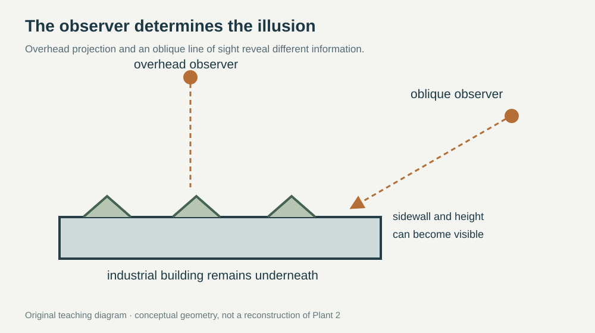
The structural interpretation should remain equally disciplined. Photographs can establish that scenic elements were present, but they do not establish their areal mass, anchor spacing or material allowable. The diagrams below are original teaching models. Their member sizes, support concepts and pressures are deliberately not presented as recovered Plant 2 design data.
Concealment changes the probability or timing of recognition. Structural resistance changes the consequences of a physical load. The two objectives require different evidence and different verification.
04 / Structural system
The load path beneath a lightweight surface
A proposed scenic canopy transfers load through its fabric or panels, secondary framing, connections, existing roof members, columns and foundations. Low total mass is helpful, but a small number of support feet may still create concentrated reactions. Existing load paths, corrosion, connection condition and available reserve capacity would have to be established by a real assessment.
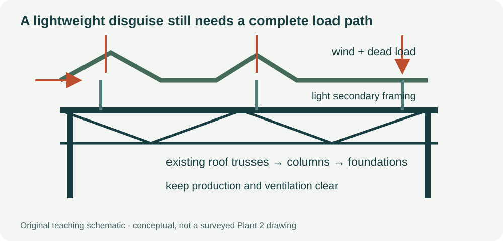
A tensioned fabric system mainly carries in-plane tensile forces, while a framed support may carry axial force, bending and shear. Connections must reconcile these different behaviors. This is the useful aerospace parallel: a skin, frame, rib and attachment each play different roles, but the load path must remain continuous.
Gravity load
For areal mass μ in kg/m² and covered area A in m², added mass m = μA and gravity pressure qg = μg. On an illustrative A = 100,000 m², even μ = 1 kg/m² adds 100,000 kg (100 metric tonnes), giving about 9.81 Pa of gravity pressure. The total mass sounds large while the distributed pressure is small; both total and local effects matter. These are assumed inputs, not historical measurements.
Wind can reverse the connection force
The dynamic-pressure scale is qdyn = ½ρV². With assumed ρ = 1.225 kg/m³ and V = 30 m/s, qdyn ≈ 551 Pa. This is not the design pressure on the canopy: pressure coefficients, exposure, internal pressure, porosity and dynamic response are still needed. A porous surface can have lower pressure differences, but zero wind load must not be assumed.
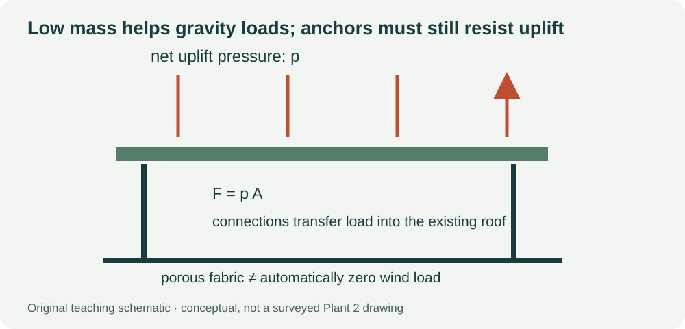
Actual checking would also include drainage and ponding, maintenance loads, tearing, anchor pull-out, support buckling and load combinations under the applicable assessment standard. This lesson supplies no site design wind speed or historic material strength.
Begin with a hierarchy of free-body diagrams. Isolate the complete cover to identify the resultant vertical and horizontal loads. Isolate one tributary strip to find the forces entering a supporting member. Then isolate the connection to determine how those forces reach the existing roof. A force that has no identified path to the foundation is a missing part of the model, not a harmless residual.
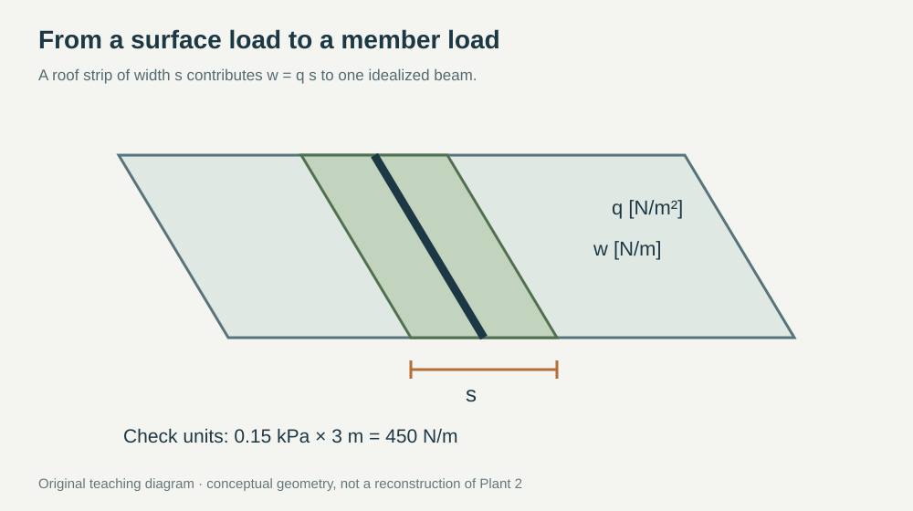
05 / Loads and boundary conditions
Wind, water and maintenance can govern
The weight of fabric and scenic framing is only one part of the loading problem. A large area can generate a substantial wind resultant even when the mass per square metre is low. Pressure differences act normal to the local surface; drag on houses and artificial vegetation can add horizontal forces and overturning moments. Real support and anchorage assessment would require an applicable wind model, local pressure coefficients, material behavior and an established assessment basis.
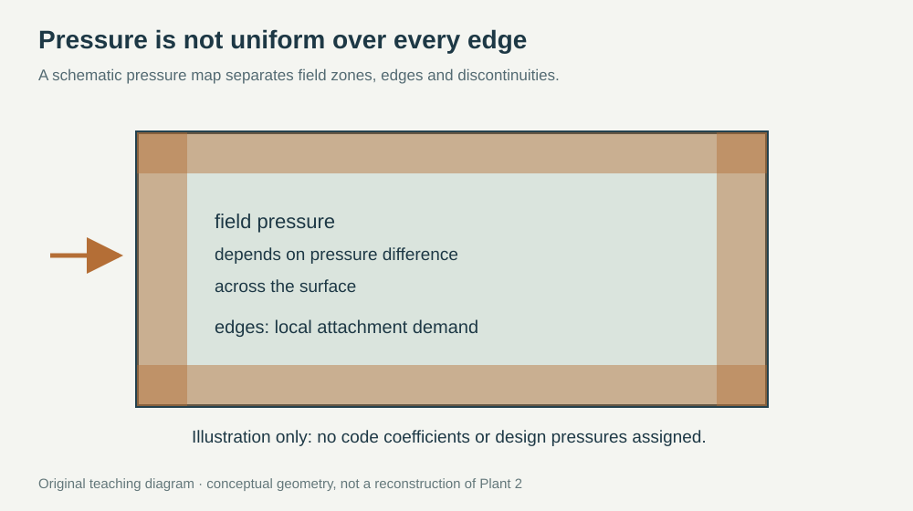
Fabric permeability changes the interaction with the flow, but it is not a guarantee of zero load. The relevant parameter is the pressure difference across the cover, together with the drag of the supporting objects. A teaching estimate F = pA is useful only after the effective pressure and participating area have been defined. Local suction can produce anchor demand that a calculation based only on net whole-roof force would miss.
Gravity and uplift also have different load paths. A support foot may transfer compression by contact under downward loading, yet need a positive attachment to resist upward loading. Friction should not be treated as an unlimited horizontal restraint, and a resting support is not automatically a tension connection. Reversal can move the critical location from a member midspan to an anchor or joint.
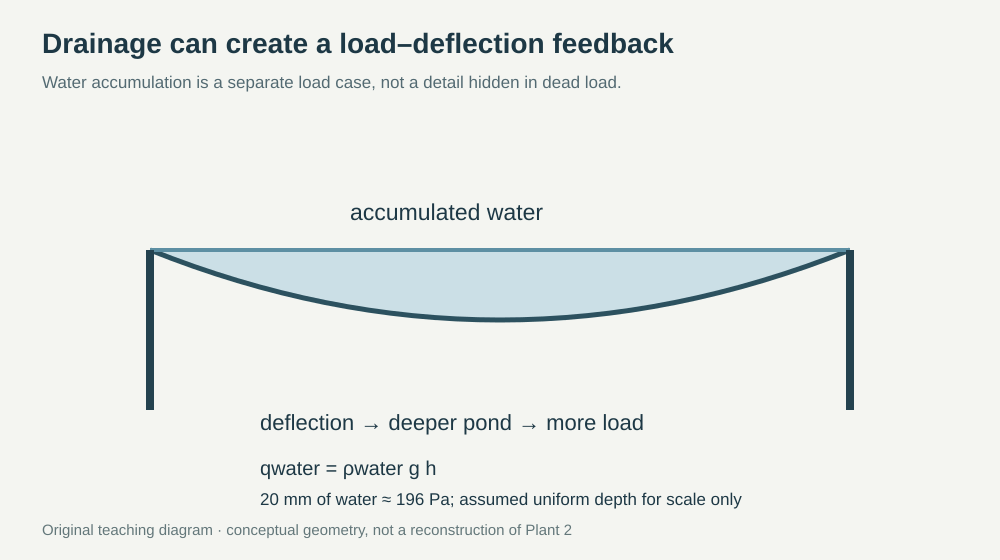
Drainage introduces another coupled problem. A surface that sags may collect water, and the additional water may increase the sag. For uniform depth h, the hydrostatic gravity load per horizontal area is q = ρgh. A hypothetical 20 mm depth gives about 196 Pa, already greater than the 150 Pa added gravity pressure in the worked beam example. An actual sloping, permeable cover needs a drainage and geometry assessment rather than a uniform-depth assumption.
Maintenance is a localized load case. Inspection paths, access hatches and repair locations concentrate people and equipment into small areas. The load should be applied where it actually enters the structure, not averaged over an entire roof until it becomes negligible. Access must also preserve ventilation, fire egress and the ability to inspect the original roof.
06 / Connections and stability
Light members need deliberate attachment design
A satisfactory member check does not complete a design. Connections introduce geometric discontinuities, local bearing, net-section loss, eccentricity and possible fastener pull-out. A simple shear estimate for n equally loaded fasteners is τ ≈ V/(nAs), where As is the relevant shear area. A nominal plate-bearing estimate is σb ≈ V/(ndt), using fastener diameter d and engaged plate thickness t. These estimates are useful for sizing the question; they are not joint allowables or substitutes for the checks described in NASA’s Fastener Design Manual [9].
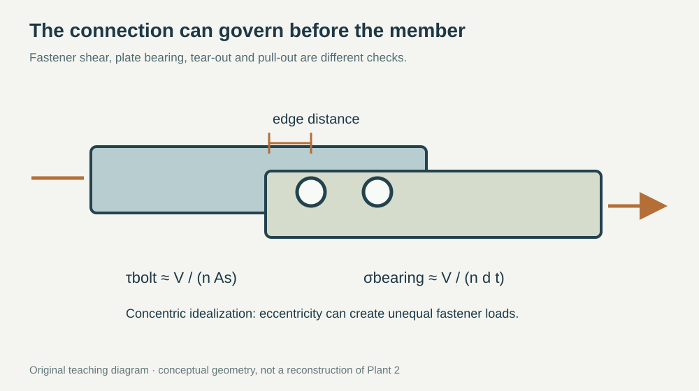
Load sharing is only equal under the assumptions that make it equal. An offset force introduces a moment; flexible plates and differences in fastener fit can further redistribute the demand. In a fabric-to-frame connection, the fastening detail must also distribute force into fibers without initiating a tear. A broad clamp, sewn reinforcement and a discrete bolt have different stiffness and failure mechanisms.
Compression members introduce a separate stability limit. For an ideal straight, elastic slender column, Pcr = π²EImin/(KL)². Here Imin is the least bending second moment of area and KL is effective length. The formula assumes a defined restraint model and ideal loading. Real imperfections, eccentricities, local buckling and connection flexibility can reduce capacity. No numerical buckling capacity is assigned to the historical installation.
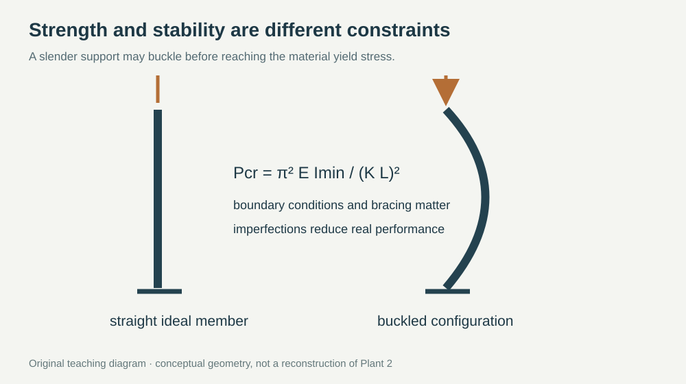
Bracing is effective only if it can transmit the required force to a stable part of the system. A brace attached to another equally flexible member may move the instability rather than eliminate it. This is a direct connection to aircraft structures: a light stiffener can carry substantial axial force, yet its performance depends on skin restraint, frame spacing and how load enters the section.
07 / Analytical models
Reduced models that expose the dominant behavior
Model one simply supported roof member with span L and tributary width s. Let q be an added uniform area load. The corresponding line load is w = qs. For constant flexural rigidity EI, small deflection and a uniform load over the full span [6]:
Mmax = wL²/8
δmax = 5wL⁴/(384EI)
|σmax| = |Mmax|c/I
E is Young’s modulus, I is the second moment of area, and c is the distance from the neutral axis to the extreme fiber. The signed reactions indicate load reversal; reported stress and deflection magnitudes below are absolute values. Existing roof loads are excluded: this is only the additional demand.
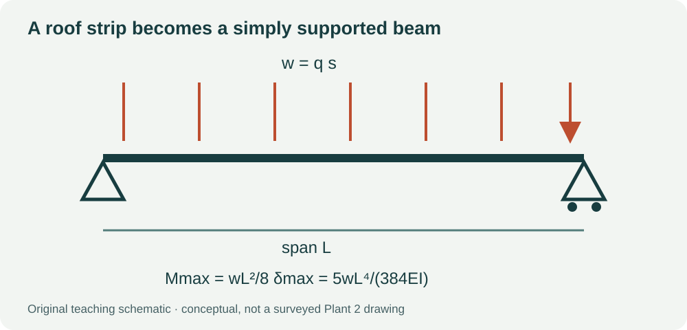
For an ideal flexible cable with uniform vertical load w per horizontal length, a parabolic equilibrium gives H = wL²/(8f), where f is midspan sag. At fixed load and span, halving the sag doubles the horizontal support force. This model is useful for understanding why an apparently flat net may create large anchorage loads; it is not a reconstruction of Plant 2’s support system.
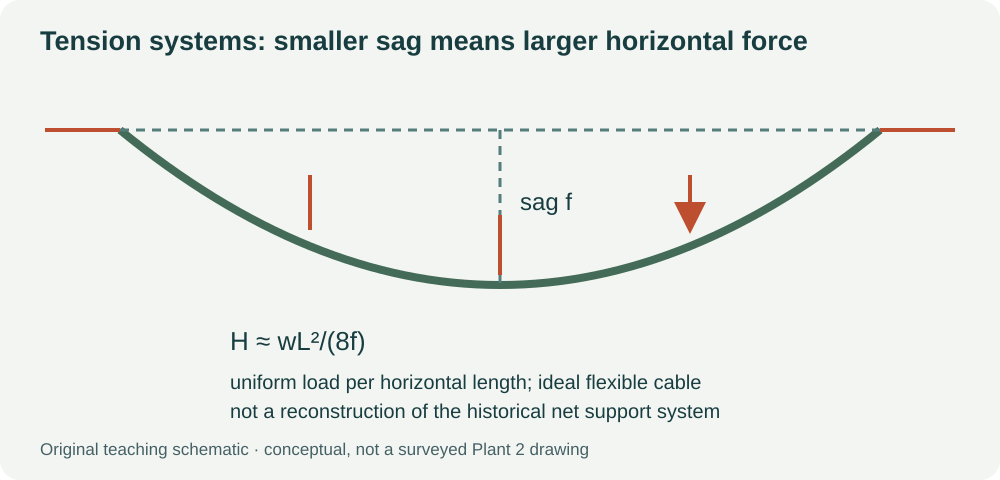
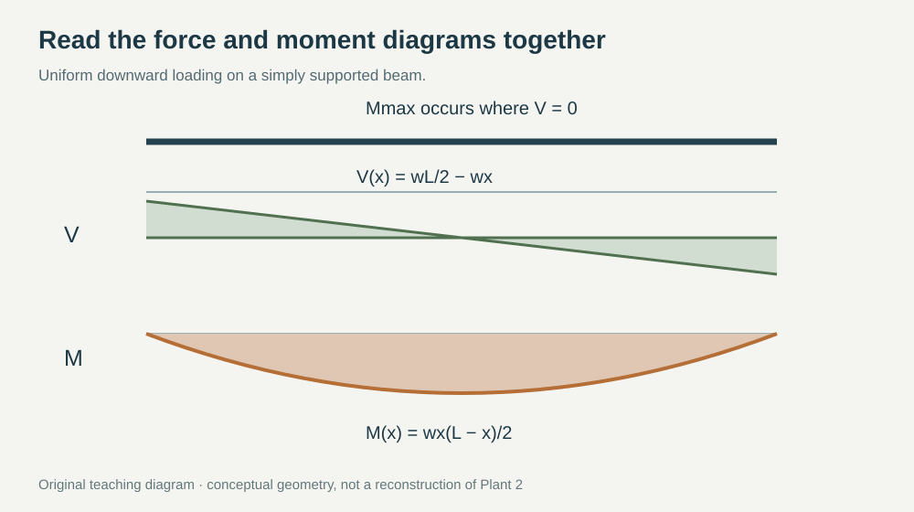
Why a small increase in span matters
With w, E and I fixed, peak moment scales as L² and deflection as L⁴. This difference explains why a support arrangement that appears acceptable by stress can still create unacceptable movement or drainage geometry. Conversely, reducing span can be more effective than adding a small amount of material. The comparison is conditional: if tributary width changes with the layout, w changes too and must be recomputed.
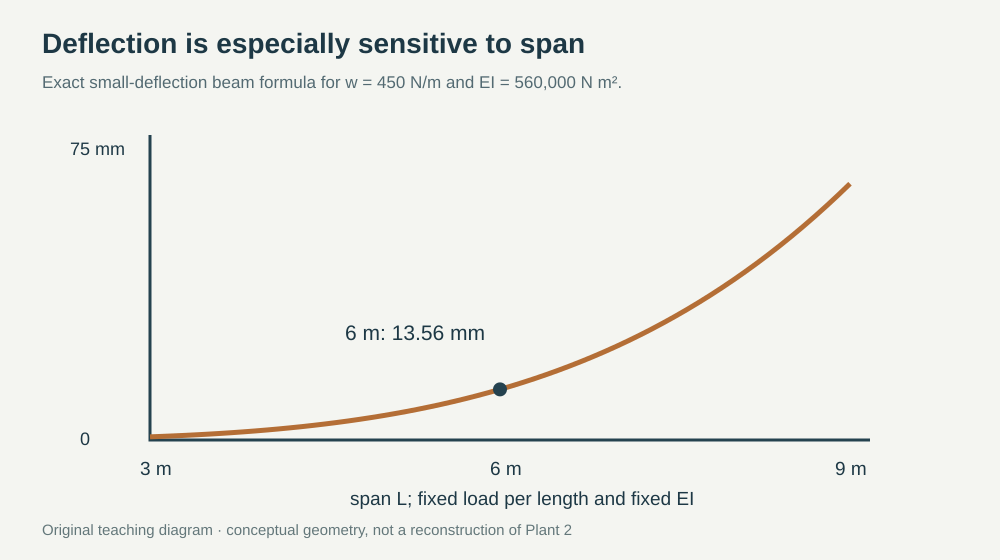
08 / Classroom investigation
A worked Beam Lab investigation
Hypothetical inputs: an aluminum teaching beam, E = 70 GPa, I = 8 × 10⁻⁶ m⁴, c = 0.06 m, L = 6 m, and tributary width s = 3 m. Added gravity pressure qg = 0.15 kPa. Apply a separate illustrative wind action of ±0.60 kPa. Positive means downward. No partial factors are applied.
| Added load case | Net q (kPa) | w (N/m) | Each reaction (N) | |M|max (N m) | |δ|max (mm) | |σ|max (MPa) |
|---|---|---|---|---|---|---|
| Gravity only | 0.15 | 450 | 1350 | 2025 | 13.56 | 15.19 |
| Gravity + downward wind | 0.75 | 2250 | 6750 | 10125 | 67.80 | 75.94 |
| Gravity − upward wind | −0.45 | −1350 | −4050 | 6075 | 40.68 | 45.56 |
- Open Beam Lab. Use a simply supported beam and the stated EI. If the interface requires a section geometry, first verify its I rather than entering an unrelated rectangle.
- Apply the uniform line load in the units requested by the app. Cross-check reactions, peak bending moment and midspan deflection against the table.
- If negative distributed loads are unsupported, reverse the model’s loading convention and report the signed reactions explicitly. Do not treat an upward load as downward without explanation.
- Double the span while keeping w and EI fixed. Predict the factors for moment and deflection before solving: 4 and 16, respectively.
- For an ideal cable with L = 6 m and w = 450 N/m, compare sag f = 0.6 m with 0.3 m. The horizontal reactions are 3375 N and 6750 N.
- Submit a free-body diagram, one Beam Lab screenshot, unit conversions, an explanation of load reversal, and three missing facts needed before assessing a real roof.
Explore the span sensitivity
Gravity-only teaching model; w = 450 N/m and EI = 560,000 N m² remain fixed.
Extension: a local connection demand
Use the upward-load case in the table. The idealized reaction magnitude at each support is 4050 N. If one support uses two equally loaded anchors, a first nominal tension demand would be 2025 N per anchor, before factors, eccentricity, prying or uncertainty. This is a demand calculation only: no anchor material, embedment, substrate or allowable has been given, so no safety verdict follows.
Extension: compare a point load with a smeared load
For a hypothetical central maintenance load P = 1000 N on the same simply supported beam, the additional peak moment is PL/4 = 1500 N m and the additional center deflection is PL³/(48EI) ≈ 8.04 mm. If the same total force were uniformly spread over the entire beam, the peak moment would be only PL/8. Explain why averaging the worker load changes the local design question.
Evidence required before a real assessment
Identify the actual support grid, load-bearing roof members, connection conditions, deterioration, existing permanent loads, access loads and environmental load combinations. Establish section and material properties from records or appropriate investigation. Confirm which elements carry tension, compression, bending and shear. Then choose an analysis model whose boundary conditions match that evidence.
Suggested student deliverable: two free-body diagrams; a table of all input units; the three added-load cases; a comparison between analysis and Beam Lab; one sensitivity plot; and a short explanation of what the model cannot establish. A numerically precise answer with an unidentified support condition is not a complete engineering result.
09 / Aerospace connection
What transfers from a factory roof to an aircraft?
| Factory-cover question | Aircraft-structure analogue | Important difference |
|---|---|---|
| How does surface load reach a support? | Skin → stringers/ribs → spars → fittings | An aircraft skin may be an essential stressed structural element. |
| Can the surface carry compression? | Thin-sheet or stiffener instability | A fabric membrane may wrinkle rather than sustain compression. |
| What happens under load reversal? | Positive/negative flight loads and attachment forces | Aircraft requirements include additional flight and fatigue conditions. |
| Does lower mass improve the system? | Mass, stiffness, strength and dynamic-response tradeoffs | Lower mass alone does not ensure acceptable stiffness or aeroelastic response. |
| Can every load path be inspected? | Damage tolerance and maintainability | Historical camouflage does not establish aircraft certification practice. |
The common skill is model selection. Engineers do not begin with a detailed simulation merely because the geometry is complicated. They identify dominant loads, boundary conditions and likely failure modes, calculate order-of-magnitude demand, and only then add detail where it changes a decision. The historical roofscape is a memorable example because its visual complexity contrasts so strongly with the simple equilibrium statements every support still has to satisfy.
What would you measure first if the roof drawings were missing: the scenic house dimensions, the support reactions, the material density or the existing member geometry? Explain how your answer changes if the concern is recognition from the air rather than structural capacity.
6 · Sources, photographs and reuse
- Zoomit · starting article, Puyesh Pourmohammad, 9 November 2026. Image sequence and Persian reading context.
- Boeing Images · Boeing Plant II Roof Camouflage, record BI210916 / p5152. Primary corporate archive description; image itself is rights-managed.
- HistoryLink · South Park Bridge, Duwamish Waterway, King County, 1931–2010; local history and Detlie context.
- Lockheed Martin · Lockheed During World War II: Operation Camouflage. Separate Burbank case, not Boeing Plant 2.
- Library of Congress · B-17 production photograph, digital ID fsa.8b07943 / LC-USE6-D-008459. Consult the original image record before using the archive ID to identify an image.
- David Roylance / MIT OpenCourseWare · Mechanics of Materials, Shear and Bending Moment Diagrams. Course mechanics reference.
- NARA / Wikimedia Commons · Boeing factory No 2, 1940; NAID 68151726, public-domain status and provenance.
- Smithsonian National Air and Space Museum · Fear and Concealment: Military Aircraft Disguises and Transformations. Museum context for the separate Lockheed example.
- Richard T. Barrett, Fastener Design Manual, NASA RP-1228 (1990). Reference for fastener selection, joint behavior and practical connection checks.

Five historical photographs and three illustrative or stylized images are externally embedded from the user-requested Zoomit article. The illustrative and stylized views are clearly identified and are not treated as historical evidence. Image pixels have not been retouched, relabeled as original course photography or copied into this repository. English captions and engineering commentary are original additions. Source-image rights remain with the relevant rights holders; this repository does not grant a license to those images. Links to the original display are provided under each image.
Some archival captions in the starting article are incomplete or ambiguous; those are explicitly identified above. Images hosted by Zoomit may become unavailable. The prose, equations and four local SVG schematics remain readable independently. Machine-readable image provenance.